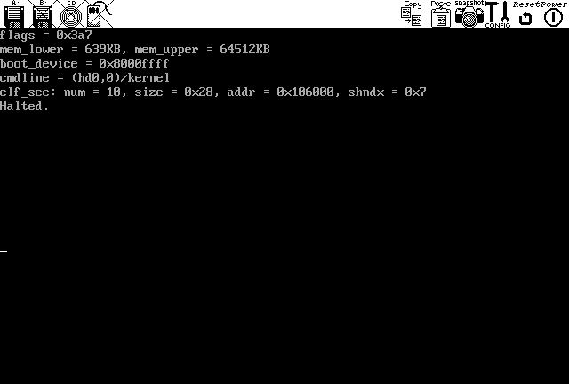

Copyright©1996-2003
Specialized Systems Consultants, Inc.
首頁(H)｜HOWTO(T)｜指南(G)｜FAQ(F)｜手冊頁(M)｜Linux電子報(L)｜LinuxFocus(S)
Linux電子報首頁｜目錄｜FAQ
讓 Linux 更加有趣呦！
One of the great difficulties a hobbyist programmer faces when trying to start the development of his own OS is finding out where to start. Many books describe in-depth theoretical OS concepts, yet noone seems to take a hobyist programmer by the hand and bring him face to face with these concepts. This is precisely what this article aims at doing.
Several articles related to this topic appeared in the last few issues of the Linux Gazette. I plan to approach it in a much less programming oriented manner, only presenting to the reader the tools and tips he will need to begin the development of his own OS. Once done with this article, the interested reader should be all set to start browsing the resources available to him and start designing and coding.
You might not be aware of it, but operating system development doesn't start at the beginning. (!!) Writing a solid bootloader is a whole project in itself, and I would not advise one to begin an OS development project by writing a bootloader. Many reliable ones are available for free (Grub, lilo, ppcboot, etc...). If you plan on writing your own, I suggest you delay this task to a later stage of the project. In this article, I will be using GNU Grub, the Grand Unified Bootloader.
To ease the pain that OS development will bring to you, you will need to set up an adapted development environment which meets a certain number of requirements:
This article will present one of many possible environments which meets these requirements. It will consist of a development machine and a testbed machine that both lie on a common network.
Obviously, this machine will need to be equipped with a good set of programming tools: assembly and C compilers, a linker and a 'make' utility are musts.
A tool I found more useful than I initially thought it would be is an emulator. Such a tool will help debug your kernel and will allow you to rapidly test your newly added line of code. Don't be fooled, though. An emulator never replaces a good ol' testbed machine.
Next, you need a TFTP server. This tool will allow your testbed machine's tftp enabled bootloader to acquire a kernel from the development machine via the network connection.
All this machine needs is a network card and a TFTP enabled bootloader that supports it.
The chosen programming tools are:
Bochs version 1.4.1 is the chosen x86 emulator. Special care should be taken to compile it with debugger mode enabled. These commands should do the job:
$ ./configure --enable-x86-debugger $ make
In order to properly use Bochs, you need to create a disk image. This image needs to have both a bootloader and a filesystem. This can be done using the mkbimage script. If you're too lazy to do it yourself, grab this gzipped 10MB disk image and add
diskc: file=c.img, cyl=24, heads=16, spt=63
to your .bochrc file.
As for the TFTP server, I chose to use atftpd. It's an easy to use linux-based TFTP server implementation.
The chosen bootloader is GNU Grub version 0.92. Special care should be taken to enable Grub's tftp client to talk to your network card. My testbed machine has a cheap NE2000 ISA clone. Following carefully the netboot/README.netboot instructions, I used these commands:
$ ./configure --enable-ne --enable-ne-scan=0x220 $ make
Note that a PnP PCI card would be easier to configure. Now, you can either install the Grub images on the testbed machine's MBR or on a floppy which your testbed machine will boot from. I prefer the latter, since my testbed machine is also used for other purposes, and therefore, I'd rather not play with its HD.
$ cat ./stage1/stage1 ./stage2/stage2 > /dev/fd0
Now just insert your floppy in your testbed machine to see if your network card gets recognized. You can either configure it by hand or use a dhcp server, if any.
grub> dhcp Probing... [NE*000] NE2000 base 0x220, addr 00:C0:A8:4E:5A:76 Address: 192.168.22.14 Netmask: 255.255.255.0 Server: 192.168.22.1 Gateway: 192.168.22.1
Note that you won't have to configure these parameters by hand each time you boot. See the GNU Grub documentation and the 'grub-install' script for details.
That's it! You're all set to test your setup!
As I mentioned earlier, I will leave the core OS programming stuff to the experts out there. So in order to test your setup, we will use the example kernel from the GNU Grub sources located in the /docs directory.
The kernel is built from three source files: boot.S, kernel.c and multiboot.h. You can build the kernel by doing:
$ gcc -I. -c ./boot.S $ gcc -I. -c ./kernel.c $ ld ./kernel.o ./boot.o -o kernel -Ttext 100000
Here's a quick and incomplete explanation. Multiboot is a standard that defines a way for the bootloader to pass information to the kernel it tries to load. boot.S accepts this information, sets up a stack, and calls 'cmain'. This function sets up the vga display, reads the information passed to him, prints some stuff and leaves. Then, boot.S gets the control back, prints the string 'Halted.', and enters an infinite loop. Pretty simple stuff, right? The reader is invited to dig into the code to get more details.
The plan is to mount your disk image via a loopback device, copy your kernel on the filsystem of the image, unmount it, and fire off Bochs. Of course, you have to add an offset to the start of the filesystem. But you knew that, right?
# /sbin/losetup -o 32256 /dev/loop1 ./c.img # /bin/mount -t ext2 /dev/loop1 /mnt/osdev/ # cp/docs/kernel /mnt/osdev # umount /mnt/osdev/ # /sbin/losetup /dev/loop1 -d $ bochs
Of course, that can be automated by your Makefile. Once in Grub, simply do:
grub> kernel (hd0,0)/kernel grub> boot
(Click the image for the full size.)
First, setup your TFTP server so that the client can retrieve your kernel:
# /usr/sbin/atftpd --daemon /home/bono/src/grub-0.92/docs
Fire off your testbed machine. Configure your network connection as shown above. Next, specify your devel machine's ip address as the TFTP server address and the location of the kernel image. Note that this option can be set by the dhcp server. Finally, start the boot process.
(...) grub> tftpserver 192.168.22.36 Address: 192.168.22.14 Netmask: 255.255.255.0 Server: 192.168.22.36 Gateway: 192.168.22.1 grub> kernel (nd)/kernel [Multiboot-elf, <0x100000:0x807:0x0>, <0x101808:0x0:0x4018>, shtab=0x106190, entry=0x100568] grub> boot
A screen similar to that of Bochs should appear on your testbed machine's display.
Well you're pretty much set to start the development of your OS. Lots of good documentation resides on the web. Browse, post, ask, think. Monolithic or micro kernel? Segmentation or paging?
If your debugging needs come to outgrow both the emulator and your kernel's printk's, one setup you could add to your OS is a serial debugger. This can range from some bytes thrown on the serial port, to a gdb-compatible remote-debugging extension. This information could be retrieved and processed by your development machine through a null-modem serial cable. It's a handy common practice in OS development.
Many thanks to all those who have accepted to patiently answer my never-ending questions on #osdev: pavloskii, geist, oink, byrdkernel, air.
Copyright © 2002, Patrick Mahoney. Copying license Published in Issue 85 of Linux Gazette, December 2002
首頁(H)｜HOWTO(T)｜指南(G)｜FAQ(F)｜手冊頁(M)｜Linux電子報(L)｜LinuxFocus(S)
{kind=link}